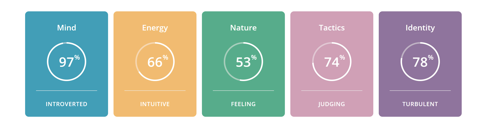
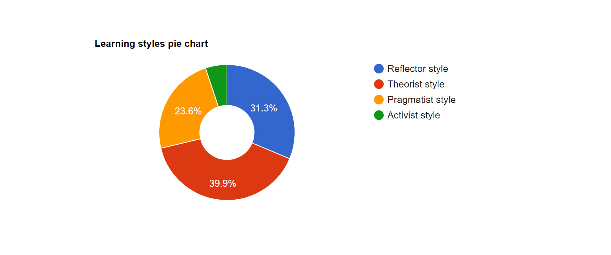
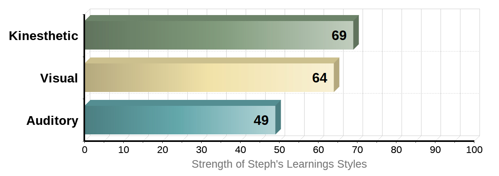

Myers-Briggs Type Indicator [MBTI]

INFJ-T: ‘The Advocate’
Strengths and Weaknesses
Creative and insightful. Always looking past appearances to discover true motivations and needs to find the perfect solution to a problem.
Spends active time in their imagination and daydreams, using their strong sense of compassion and understanding to discover actuality and key
resolutions.
Principled and passionate. Holds strong beliefs and sincerity and assurance of values are shown when discussing matters close to heart. As an
advocate, we can be considered to be persuasive and exciting communicators, showing off our enthusiastic nature to those who are listening.
Perfectionist. Strives for constant improvement, sometimes to the point of perfectionism, leading to procrastination and the perpetual need for
something more. Our sometime obsessive nature can cause us to purse our beliefs with tenacity, focusing on nothing else, disrupting those around
us, and leaving others less than pleased.
<
Altruism and fears. Has fears that are known to be irrational (stemming from the idealised perfectionism they struggle with), however, tend to be
altruistic in nature; working past apprehensions and using their strengths and eagerness for the greater good and to help others to succeed.
Criticism and conflict. While striving for excellence, they tend to be sensitive to criticism, especially if their values and ideologies are
challenged, and can become defensive and negative in response. They do not respond well to conflict at all and try to avoid it all costs.
In turn, they are then reluctant to open up with thoughts and feelings when facing criticism and conflict but are also very private individuals.
They value honesty, so you can expect straightforward and sincere discussion, but they may not be able to open up with their thoughts and feelings
in return.
Burnout. Due to their perfectionist traits, inability to share and want for more, INFJ-T Advocates are prone to burnout if they can’t find a way to
balance out the drive and sense of accomplishment they compel.
Team Composition
INFJ-T Advocates are likely to purse careers that align with their values and ideologies, over one that offers financial significance or positions of
importance. Their altruistic nature, desire to connect and ability to communicate efficiently and effectively make them strong contenders for
leadership roles. Their standards of creativity, ingenuity and autonomy allow them to exercise their direction and leadership and help others excel.
To feel genuinely fulfilled in their role, they will need a sense of independence, and work that supports their ideologies while allowing them to
explore a range of opportunities, while reinforcing their team’s organisation. I feel like this is true to my personality, as while I enjoy working
as part of a team, I thrive on my independence and the chance to do my work to the best of my ability. I do, however, know when I am defeated, and
required help, and would ask for it.
The Big Five Personality Test
Strengths and Weaknesses
High results in agreeableness and conscientiousness show that at the time of taking the test, my outcomes show I am compassionate, good-natured, and prefer
cooperation to conflict and competition (also seen above in the INFJ-T criticism and conflict trait).The results also reflect that I am dedicated to my work,
have a clear sense of duty, am well disciplined, organised and appreciates precise details, in both my work, study and personal life.
Existing results show that a very low score on extraversion, finding it easier to be reserved in my feelings and come across as quite formal and reserved.
It also displays that I would prefer to work alone, and avoid direct leadership roles, which is in complete disagreement with the Myers-Briggs result of
INFJ-T ‘Advocate’ of which show strong leadership characteristics.
A higher natural reactions result shows feelings of anxiety and worry, especially in stressful situations. However, this could just be residual feelings
from the mindset of when the test was taken, as this result has varied each time I have taken this test previously. Generally, I work well under
pressure, which you could not determine from this type of test. The mid-range score for openness to experience describes my personality as creative-leaning,
imaginative yet practical, and of favouring detail and technical problem-solving.
Team Composition
As mentioned above, the extraversion score is in direct opposition to the Myers-Briggs result which considered INFJ-T types to be prominent leaders.
This could have been the result of the mentality I had when approaching the test, which I would need to be mindful of when setting tasks, not only
for myself but for others if I did take on a leadership role. As someone who is generally introverted in their day-to-day life, I do not disagree with
the very low score on the extraversion scale, however, if required (as it is in my work) I would work through any anxiety and apprehension and
communicate with those around me to ensure that work was being prioritised as needed and everyone was on the same page.
Learning Styles Test

Primary Learning Style
Theorist
I prefer to think problems through in a logical manner, valuing rationality and objectivity over emotions and sentimentality. Theorists
are disciplined, aim to fit matter into rational order, assimilate contrasting facts into coherent theory. Learning methods that suit
theories include models, classroom response systems, story-telling, quotes, tutorials (in conjunction with practicals).
Strengths and Weaknesses
While disciplined, can be narrow-minded on one model of thought, and focus heavily on that concept until fully understood. This could be
a problem when content moves quickly, or when speed is a necessity. On the other side, the logical manner in which learning is approached
leaves little room for oversight, and concepts are fully comprehended before moving along (sometimes to the detriment of the timeline).
Team Composition
The ability to think rationality is helpful when leading a team, but also a valuable tool when participating as part of a group.
I believe based on the learning styles given, I would learn and respond better to a role as part of the group, rather than as a leader,
dependant on the individual leading the group. They would have to present information logically, or potentially as an anecdote for me
to fully appreciate and comprehend.
Learning Styles Test #2

Primary Learning Style from Test #2
Kinaesthetic
This learning styles test shows that I am mostly a kinaesthetic or tactile learner. I learn better when I can create or work with my hands
and can complete tasks by being involved through a hands-on learning experience. I also learn well visually, and can recall study more
efficiently when I can physically take notes, make charts/posters, or can visualise spoken instruction into the written word.